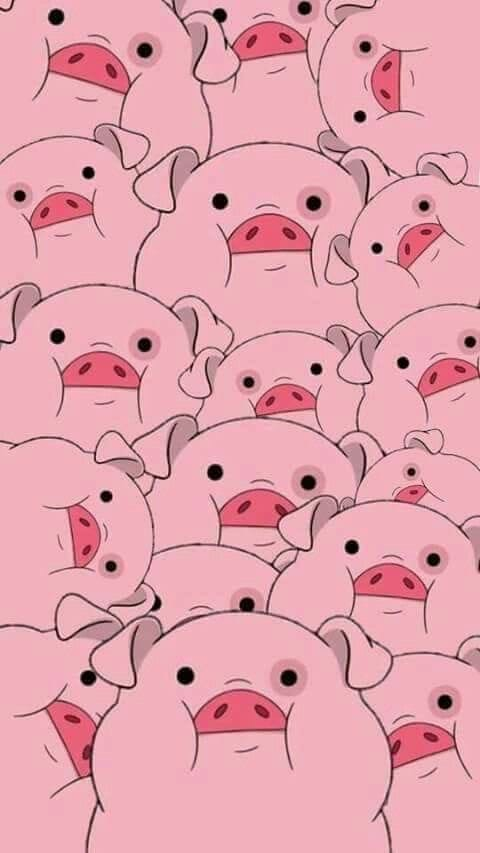

В наше время среди учёных нет точного ответа

В наших секретных лабораториях в рамках проекта «Пандора» разрабатывалось
психотропное оружие. В результате неудачного эксперимента большинство ученых, работавших
над прибором, подверглись воздействию психотропного излучения, и они, находясь в состоянии
аффекта, растащили прототип по деталям. Возможно, наши ученые до сих пор находятся в
состоянии аффекта.Ольга Калыпина взяла ипотеку в 2007 году, а через три года ей начали постоянно начислять пени по кредиту. Она судилась с банком с 2010 года, все процессы она выигрывала, но банк продолжал насчитывать ей пени.